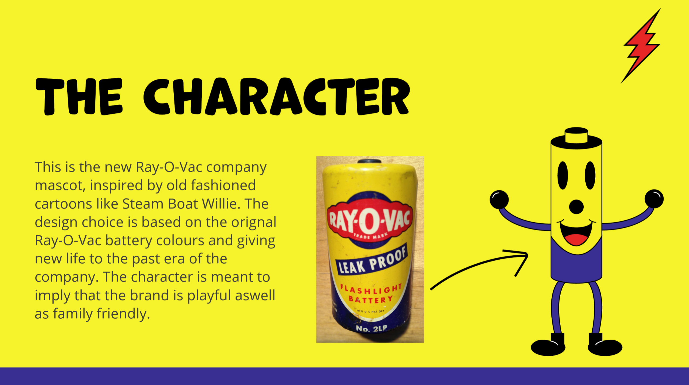
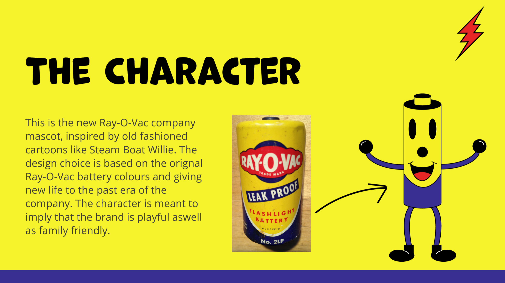

GBDA 202: Re-Brand It!
Details of The Project:
The Task was to analyze a current brand with a physical product and give a critique of what works and what doesn’t. We then needed to redesign the brand based on our feedback giving a completely new style and look to the brand. The final step was to create a 10-20 second advertisement and compile the three stage into a series of pitch boards.
The big idea is rebranding Ray-O-Vac with a family-friendly, retro 20-30s cartoon style, complete with a new logo and mascot to better align with the target demographic of young families and millennials. This revamped aesthetic aims to convey the message that Ray-O-Vac offers safe, affordable batteries ideal for family use, moving away from its current industrial-focused image.
My idea for the new mascot was inspired by Steam boat willie era cartoons and how Rayovac was lacking a key identifiable mascot compared to its competing brands. The idea for the characters colours was based off the original Rayovac battery since the character was retro it felt right to go back to the old Rayovac colours that really pop out and are identifiable.
Requirements
- Analyze and Critique the current branding of a product
- Create a new visual style and identity for the brand based on the paint points outlined
- Create an advertisement for the Brand using the new visual Identity of the Brand
Skills Acquired:
- Experience with Adobe Express
- Experience in Brand design and analysis
- Experience in Advertisement creation and presentation skills
Software Used
- Adobe Express
- Adobe Illustrator
- Adobe Photoshop

 
